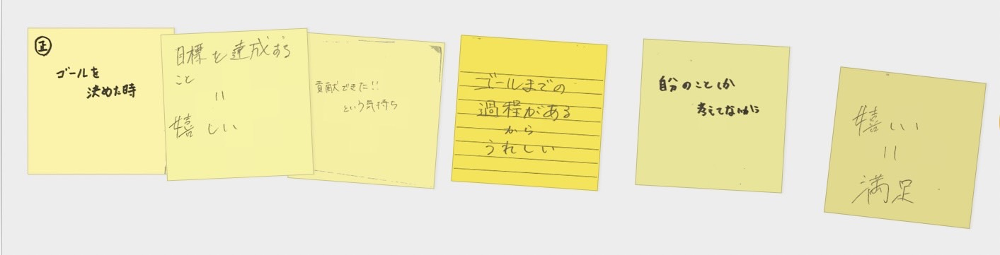
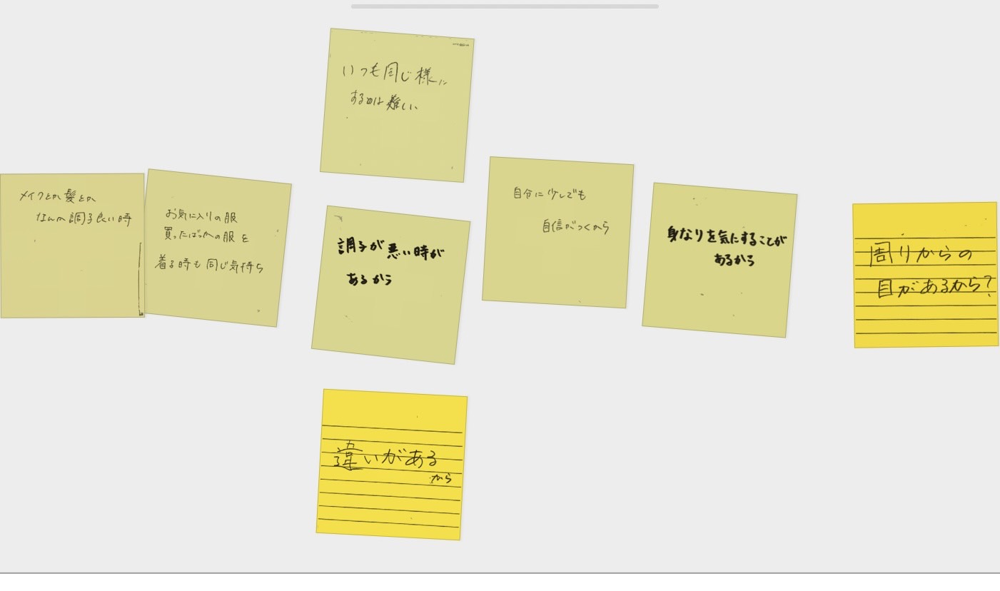
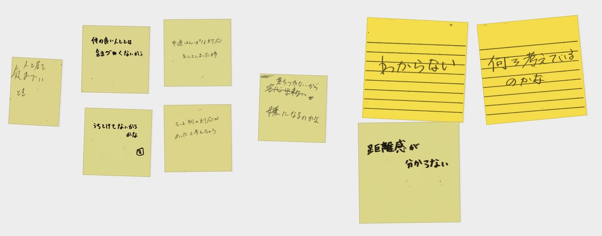
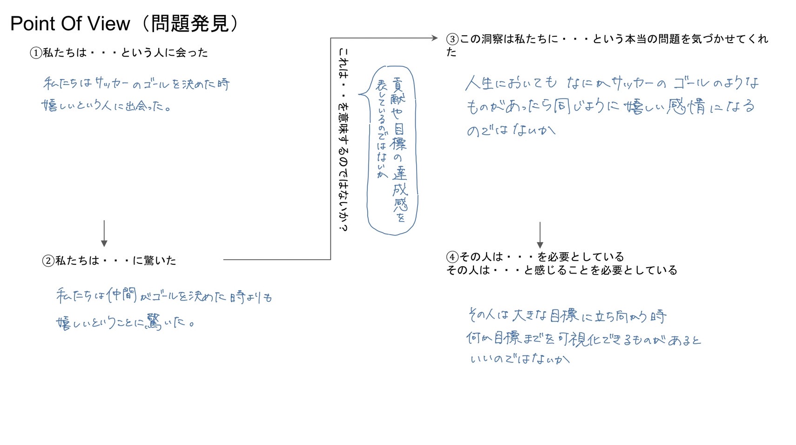

授業内で使用したプログラム
授業内での話し合いまとめ
日常生活のどのような場面でプラス・マイナスの感情が出るかについてグループで話し合った。
その中でもさらに３つの場面について「他にもこういう考えが根底にあるから出た感情なのではないか」ということを考えた。
※以下の画像はその話し合い時に出たポストイットのスクリーンショットである。
①サッカーのゴールが決まったとき

②メイクや髪形などなんか調子がいい時

③人といて気まずい時

第２回課題
話し合いをもとに自身で1つの場面についてのPOVを考えた。
